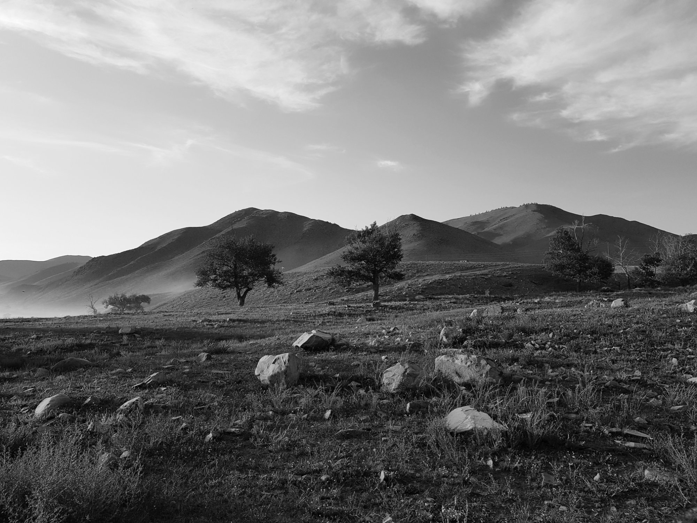

The studio in Belgium
Studio
Founder & Interior Architect
"Your space is designed around who you are."
Inspired by nature and ritual.
Your space is designed around who you are, inspired by nature and ritual. Honest, natural materials that smell, breathe and evolve, together they shape an interior in harmony with its surroundings.
Whether it is your home, an office, a shop or a place for guests: you work directly with one interior architect, from the first conversation to the final detail. What follows is an interior that feels personal, stays timeless and is made to last.

An interior that is entirely yours.
You dare, and you care for ritual and the nature your space exists within. No generic interior, no design that only looks good in photos, no three moodboards to simply pick from.
Here it works differently. Your project begins with a real conversation, not a brief, and with attention for the things that don't appear on moodboards: how people move through the space, what makes them linger, what you always wanted but never found the words for.
What follows is an interior built from honest materials, attuned to how the space is really used, not to how it photographs.
Material you feel before you see it.
Choosing a material is not an aesthetic decision. It shapes how a space feels every day, and what it still has to say ten, twenty years from now.
Natural materials don't age, they mature. Oak that lasts for generations, natural stone that never goes out of style, clay and linen that can be repaired rather than replaced, from renewable sources, without off-gassing finishes. Replacing less means wasting less; here, durability is not an addition, but the result of choosing well.
Untreated wood and natural stone carry a subtle, living scent, a room that smells of what it ís, not of varnish or glue.
Stone holds its coolness in summer, wood carries warmth before you touch it. Material that moves with the season.
The grain of oak, the tooth of clay, the hand of linen: surfaces the fingertips recognise and that invite touch.
Quality over quantity. Always.
That same care takes time. That is why only a limited number of projects are given a place each year, not to create exclusivity, but because real attention cannot be scaled.
So your project receives the full weight it deserves.
View the work →Process
Full project"You tell your story: how you live, what you need, what you dream of for your home."
"You receive a clear design vision and layout that immediately feels like yours."
"You help choose every material and detail, all attuned to who you are."
"You are fully unburdened: the execution is closely guided until everything comes together as intended."
"You step into a home that feels entirely right, checked down to the final detail."
This process applies to the full project.